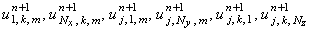

|
4.2. Метод решения.
Явная разностная схема (9.3) содержит одну неизвестную величину - значение функции
u на (n + 1)-ом шаге по времени. Выражая эту величину из разностной схемы, получаем
рекуррентное соотношение
позволяющее рассчитать все значения функции u на (n + 1)-ом шаге по времени
(при известных значениях на n-ом шаге),
кроме значений , определяемых с помощью граничных условий.
Если заданы граничные условия 1-го рода, то эти значения определяются непосредственно
из разностной аппроксимации граничных условий:
Если заданы граничные условия 2-го или 3-го рода, то искомые значения можно определить,
выразив их из разностной аппроксимации граничных условий.
Ниже приводится алгоритм решения (в виде блок-схемы) явной разностной схемы
(9.3), аппроксимирующей трёхмерное дифференциальное уравнение параболического типа (9.1).
|